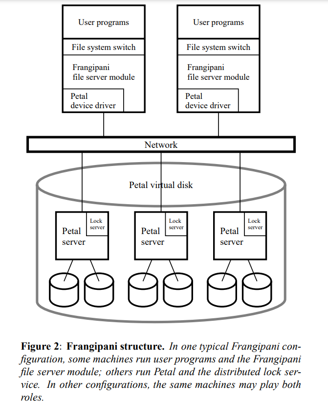

6.824 的第八篇论文是 Frangipani——一种建立在 Petal（一种可扩展、高可用性、自动管理的分布式存储服务）上的可扩展的分布式文件系统，并使用分布式锁来确保一致性。
Frangipani 初探
特点
Frangipani 有一个显著特点，就是它采用一组协作机器使用一个公共存储 Petal 的内部结构，使用锁进行访问同步，同时具备以下特性：
- 为所有用户提供同一组文件的一致视图，即对于同一个文件，所有用户在访问时都能看到相同的数据；
- 可以任意添加服务器到 Frangipani 架构中以增加存储容量和吞吐量，而无需更改现有服务器的配置或中断其运行；
- 系统管理员可以添加新用户，而无需担心哪些机器将管理他们的数据或哪些磁盘存这些数据；
- 系统管理员可以对整个文件系统进行完整且一致的备份，而无需将其关闭，同时允许用户快速访问意外删除的文件；
- 文件系统能容忍并从故障中恢复而无需人工干预。
系统结构
如下图所示，Petal 表现得就像一块被所有用户使用的，基于网络的共享虚拟磁盘，它会运行在一些不同的服务器上。当 Frangipani 需要读写数据时，它会向正确的 Petal server 发送 RPC。

用户通过标准操作系统调用借口访问 Frangipani，对一台机器上的文件或目录进行的修改会立即对其他人可见。
Frangipani 采用 Cache 来缓存文件，这样在一段时间内对文件的修改只需要在本地进行，而无需耗费更高的时间成本进行 RPC 的调用。同时，在下一个用户访问该文件前，不会将修改后的数据持久化到 Petal，但会将元数据的修改操作记录到 WAL 中。WAL 保存在 Petal 中，这样当 Frangipani 崩溃时，其它服务器可以访问 WAL 并进行故障恢复。
每个 Petal server 持有一个 lock manager，它有一个表单，存放文件对应的锁以及持有锁的用户，来协调对 Petal 的访问以及保持多个 Frangipani 之间的缓冲区的缓存一致性。两个 Frangipani server 间无需直接通信，而是通过 LM 通信，这也简化了成员的变化操作。
锁服务
Frangipani 中的锁服务提供共享读锁与排他写锁。当一个 Fserver 访问文件时，它会向对应的 Pserver 中的 LM 发起 Request 请求该文件合适的锁，并在得到 LM 的 Grant 回复后才获得锁，从而正式读取文件或修改文件。之后，Fserver 会一直持有文件锁（但可能不使用它）而不主动释放，这种惰性释放锁的策略也一定程度上提高了性能——在没有其它 Fserver 请求访问的前提下，后续对相同文件的修改不用再次请求锁。
若有其它的 Fserver 发起了冲突的锁请求，LM 检查当前有一个 Fserver 正持有锁，它会向该 Fserver 发起一个 Revoke 请求，持有文件锁的 Fserver 等到当前没有对该文件进行的任何操作，它会将对该文件的所有修改应用到 Pserver 上，这一步完成后才释放锁，向 LM 发出 Release 请求。LM 随后删除表单中原先该锁对应的条目，再重新执行一次锁分配的操作。
通过 LM 的协调服务，我们可以实现良好的 缓存一致性 Cache Consistency——A 对本地缓存进行的修改，能够被 B 感知到。同时，只要保证 Fserver 在操作期间一致持有锁，就能保证对文件操作的原子性 atomicity。
故障处理
日志
如前文所述，每个 Frangipani server 都会在 Petal 的某个地方存放自己那部分 WAL。当 Frangipani 需要对文件元数据进行修改时，它首先创建一个修改记录并 append 到本地内存的日志中，这些日志被定期（大概 30s）写入 Petal，只有在日志完整写入 Petal 后，Petal 才会永久修改实际的元数据。事实上，在 Release 锁前，Fserver 会先将日志写入 Pserver，再传输脏数据。
恢复
LM 使用 lease 来处理故障，也就是说，当对一个锁进行 Revoke 时，过了 lease 规定的时间没有得到 Release 回复，它会认为这个 Fserver 发生了故障，从而进行故障处理。
dead 发生故障后，Pserver 会让另一个 Frangipani（称为 demon）读取其日志并进行恢复。demon 会隐式接管 dead 挂前持有的锁，并从日志开始按顺序进行重做，执行完成后，释放 dead 的锁，之后整个系统按正常状态运行。
这里有可能的几个发生故障的时刻：
- 还没发送日志就挂了：此时文件系统会和 Fserver 开始修改前保持一致，故不用进行任何操作。
- 日志发送到一半挂了：说明 Fserver 尚未发送脏数据，只需执行已发送的那部分日志即可。
- 脏数据传到一半挂了：说明 Fserver 必然已经发完了所有日志，那么对所有日志重做就好了。
无论是哪种情况，都有一个共同点：只需要执行已写到 Pserver 内的日志。
为了防止 demon 在进行故障恢复时其它 Fserver 对 Petal 的干扰，在日志条目中增加版本号的属性：当且仅当日志中元数据的版本号高于 Petal 中存储的数据的版本时，才执行日志。如果是 Petal 中的版本更高，那说明已经有 Fserver 在 dead 修改之后对元数据进行了修改，不能进行回退。
且 demon 无需关心元数据上是否持有锁。如果有锁，那大可以放心读取；如果锁已经被释放了，那脏数据肯定已经被写进去了，不用执行也没时。
总结
Frangipani 提供了实现 Cache Consistency 的新思路，但由于时代的限制，它并没有对存储系统的演进产生任何影响，也无法应用到分布式系统的主要应用场景中。